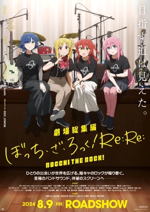

I have been learning about IT since elementary school when we started block coding on code.org.
Since
then I
learned some HTML, CSS, and Javascript in class, and some C# on my own. I've also learned some other assorted
IT skills not related to programming but they are a lot less concrete.
Other
I like playing video games, going on walks/biking, watching anime/tv, playing bass, and I hope to
one day be fluent
in
german, form a band, and also play soccer. Listed below are some of my favorite pieces of media.
Things I like
Assassin's creed is one of my favorite game series but Black Flag particularly is my favorite
entry. Frieren is one of my favorite animes because it's different and interesting. The fact that the
names of a lot of characters and places are German is a plus.Hollow knight is usually very fun and can get difficult at times. Nightmare King Grimm was one
of my favorite bosses as he was very challening whilst still remaining fun.Bluelock can be kinda over the top at times but is entertaining and genuinely makes me want to
play soccer.Omori has a very captvating story with great characters. The gameplay is decent, but the story
is the best part as it is completely amazing.

I really liked watching bocchi the rock as the comedy is expertly crafted and the music is peak.
It got me back into playing Bass and makes me want to join a band.Hearts of Iron IV is a ww2 grand strategy game. It is very complex and I have 600 hours on it and
still don't really get how to play well. But it's very fun most of the time.